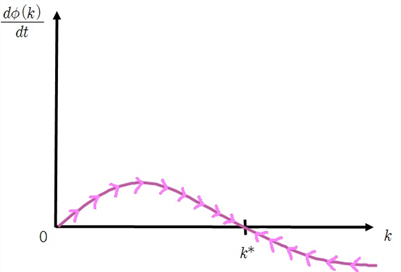
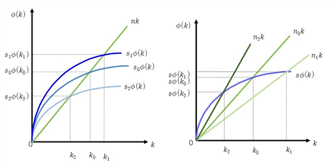

균형성장이론이다. 그는 사뮤엘슨 교수와 신고전학파이론의 기초를 정립하였는데, 이 이론은 노동과 자본의 대체관계를 인정하고 경제성장요인을 수요측면이 아닌 생산측면에서 찾으려 하였다. 경제가 지속적으로 성장하는 정상상태(steady state)에서는 저축과 투자가 이자율의 조정으로 항상 일치할 뿐만 아니라 완전고용을 실현할 수 있다. 또한 솔로는 한계생산력설과 기술의 가변성을 도입하여 새로운 시각에서 성장이론을 전개했던 것이다. 그는 시장수급조절기능에 따라 경제가 균형상태에 이르며 일정한 규제하에서 기업의 이윤이나 개인의 효용을 극대화한다는 경제학의 기본원리를 존중 하지만 동시에 현실경제는 불균형 상태에 있으므로 유효한 거시정책을 시행해야 한다는 케인즈학파의 전통을 따르고 있다.[88]
Solow 모형은 재화의 공급능력이 증가하면 경제성장이 가능하다고 암묵적으로 가정하며, 공급 측 요인을 중심으로 분석한다는 점에서 신고전파적이다.
1950~1970년대 미국 자료를 관찰한 결과 다음과 같은 특징이 나타났다.
- 저축률과 생산요소의 소득분배율은 거의 일정했고,
- per capita GDP growth rates were steady.
(가정)
(a) 총수요 = 총공급(케인즈모형)[89]
Y^{d} \,=\,Y^{s} , Y^{d} ; 케인즈적 총수요 , Y^{s} \,; 총생산 또는 총공급을 의미
(b) 생산함수
ⓐ 총생산은 노동과 자본의 함수이고[90], ⓑ The production function exhibits Constant Returns to Scale(1차 동차 함수)이며[91], ⓒ 한계생산물은 체감한다.
ⓐ Y^{s} =f(K,\,L) ,
ⓑ Y^{s} \,=Lf( \frac{K}{L} ,\,1)\,=L \phi (k)\,, where k= \frac{K}{L}, \phi (k)\,=\,f( \frac{K}{L} \,,\,1)
ⓒ f_{\scriptscriptstyle {K}} >0,\;f_{kk} <0 ....................[92]
(c) 인구는 일정비율(n)로 지수함수적으로(exponentially) 증가한다.
\frac{dL}{dt} LSLANT L\,=n\, ; n는 인구증가율[93]
(풀이)
1) 단기적 균형 : 총수요 = 총공급
총생산 즉, 총공급은 소비와 투자로 구성
Y^{d} \,=\,C+I
⇒ y^{d} \,=\,c+i , where y^{d} \,=\, \frac{Y^{d}}{L} , c\,=\, \frac{C}{L} , i\,=\, \frac{I}{L}
총수요는 소비와 저축으로 구성
Y^{s} \,=\,C+S\,=\,C+\,sY^{s} , where s\,: 한계저축성향 (0 \leq s \leq 1)
⇒ y^{s} \,=\,c+sy^{s} , where y^{s} \,=\, \frac{Y^{s}}{L}
단기 균형에서 총수요 = 총공급 이어야 하므로
y^{d} \,=y^{s}
⇒ \,c+i = \,c+sy^{d}
⇒ \,i\,=\,sy^{d}
⇒ \,i\,=s \alpha \phi (k) , (∵y^{d} \,=y^{s} \,=\, \phi (k))
⇒ \,I\,=\,sL \phi (k)
i는 1인당 총투자이고 \,s \phi (k)는 1인당 총저축이므로 케인지안 균형에서 총투자는 총저축과 같음을 의미.
k_{0} 의 1인당 자본량을 투자하면 y_{0} = \phi (k_{0} ) 만큼의 생산물이 생산되고 이는 c_{0} \,=\,y_{0} -i_{0} 만큼 소비되고 i_{0} =s \phi (k_{0} ) 만큼 투자 된다.
(3) 동태적 균형 (자본축적)
- 투자는 자본재를 증가시킨다.
인구의 증가는 1인당 자본재를 감소시킨다.
1인당 자본재 변화율은
\frac{dk}{dt} = \frac{d}{dt} ( \frac{K}{L} )= \frac{1}{L^{2}} (L \frac{dK}{dt} -K \frac{dL}{dt} )
= \frac{1}{L} \frac{dK}{dt} - \frac{K}{L^{2}} \frac{dL}{dt} ..............①
한편, 자본재 변화율은 투자와 같으므로
\frac{dK}{dt} =I\,
\,=sL \phi (k)..................② , (∵앞의 총수요=총공급 가정)
인구증가율은 \frac{dL}{dt} LSLANT L\,=n\, 이므로
\frac{dL}{dt} \,=nL\, ..................③
②, ③을 ①에 대입하면
\frac{dk}{dt} \,= \frac{1}{L} \frac{dK}{dt} - \frac{K}{L^{2}} \frac{dL}{dt}
\,= \frac{1}{L} sL \phi (k)- \frac{K}{L^{2}} nL
\,=\,s \phi (k)-kn
솔로우 기본방정식[94] | \frac{dk}{dt} =s \phi (k)-nk |
1인당 자본재의 증가율[95]은 생산량 증가로 인한 저축 증가 만큼 증가하지만 노동인구가 증가할수록 감소한다. 인구증가는 자본에 직접적인 영향을 끼치지 않지만 1인당 자본을 감소시킴.
(인구증가로 인한 자본의 희석효과)
솔로우 기본방정식은 \phi (k)가 일반형이므로 k에 관한 비선형 미분방정식이다.
이의 해는 수치적으로 도출하기 어렵다. 따라서 해의 의미를 그림을 이용하여 많이 설명한다.[96]
n은 상수이므로 nk는 그림에서 직선으로 표시.
k_{1} 에서 s \phi (k_{1} ) \geq nk_{1} 이므로 총처축(총투자)가 인구증가로 인한 1인당 자본감소를 초과하므로 자본은 증가한다. k_{2}에서 s \phi (k_{2} ) \leq nk_{2} 이므로 자본은 감소한다. k*에서 안정적이 되고 이 상태를 벗어나려고 하지 않는다.
(정의) 정상상태(steady-state) 정상상태(steady state)는 노동자 1인당 자본 k가 더 이상 변하지 않는 균형상태이다. |
k*를 정상상태라고 한다.
즉, \frac{dk}{dt} =0 ⇒ \mathbf{s} \phi (\mathbf{k})=\mathbf{n}\mathbf{k}
s \phi (k)는 일인당 저축량이므로 투자량과 일치. 즉 위 식은 일인당 자본을 유지하기 위한 양과 투자량의 일치를 의미.
n은 인구증가율이므로 자본증가율이 인구증가율과 일치해야 정상상태가 된다는 뜻입니다. 즉 인구가 증가하는 만큼 자본을 축적하는 식으로 경제성장이 이루어진다는 의미.[97]
정상상태에 있을 때 k(t)는 시간이 지나도 일정하게 유지된다.
k*(t) 가 결정되면 ⇒ \phi (k*)\,=\,y^{d} *\,=\,y^{s} * 결정 ⇒ c*=y^{s} *\,-\,s \phi (k*) 결정
인구(L(t))는 외생변수이므로
∴ K*(t) = {k*(t)} {L(t)}, Y(t)*=y(t)*L(t), C(t)*=c(t)*L(t)
L(t)=L(0)e^{nt} 이므로[98], 이를 위에 대입하면
K*(t)=k*(t)L(0)e^{nt}
Y(t)*=y(t)*L(0)e^{nt}
C(t)*=c(t)*L(0)e^{nt}
자본, 노동, 소비, 총생산이 일정한 비율로(인구증가율만큼 지수적으로) 성장하기 때문에
이때의 경제성장경로 Y(t)를 正常狀態 성장경로(steady-state growth path) 또는 均齊 성장경로(balanced growth path)라 한다.[99]
위 식들이 의미하는 바는 인구성장 없이는 경제성장이 없음을 의미. 인구성장률이 0라면
자본, 소득, 소비의 증가는 없고 경제성장은 일어나지 않는다. 이는 인구가 정체상태인 나라에 시사하는 바가 크다.


저축률과 인구증가율이 변할 때 균형점이 어떻게 변하는 가를 알아보자.
저축률이 증가하면 \,s \phi (k) 선이 상향이동을 한다. 그렇다면 균형자본량은 nk 선과 \,s \phi (k) 선의 교차점을 따라 우측으로 이동한다. 결국 저축률이 증가하면 균형자본량 k*도 증가하고 Y^{q} \,=L \phi (k)\, 에서 생산도 증가하기때문에 경제성장률이 상승한다.
인구증가율이 감소를 하면 nk 직선의 기울기가 완만해지므로, 균형자본량은 nk 선과 \,s \phi (k) 선의 교차점을 따라 우측으로 이동하고 1인당 자본량과 1인당 GNP는 증가한다. 반대로 인구증가율이 증가하면 1인당 자본량과 1인당 GNP는 감소한다.[100]
안정값은 저축에 비례하고 인구증가에 반비례한다.
안정값이 높은 것이 더 바람직한 것을 의미하는 것은 아니다.[101]
인구증가율이 계속 감소하여 0에 가까워 진다면 1인당 GNP는 무한대로 증가? 앞에서도 언급했듯이 인구증가율이 0이라면 외부요인이 없을 경우 총GNP는 정체되므로 경제는 성장을 멈춤. 즉 인구증가율을 낮춰 1인당 GNP를 높이는 효과가 있는 반면에 총GNP는 낮아진다.
국가의 정책입안자는 이 둘간의 trade-off 관계를 잘 조정하여야 한다. 낮은 GNP의 국가가 1인당 GNP를 높이기 위해 인구억제정책을 쓰는 것이 과연 바람직한가?
\mathbf{Y}(\mathbf{t})=\mathbf{y}(\mathbf{t})\mathbf{L}(0)\mathbf{e}^{0} \,=\,\mathbf{y}(\mathbf{t})\mathbf{L}(0)
매년 투자는 신규 사업으로 인한 자본증가와 기존설비 감가상각으로 인한 마모분의 충당분으로 구성된다.
따라서
자본증가량 = 투자 - 감가상각액
\frac{dK}{dt} =sL \phi (k)- \delta K, \delta ; 감가상각률(일정).................④
앞의 ①의 식을 다시 쓰면
\frac{dk}{dt} == \frac{1}{L} \frac{dK}{dt} - \frac{K}{L^{2}} \frac{dL}{dt} ...................①
①에 ③, ④ 를 대입하면
\frac{dk}{dt} == \frac{1}{L} [sL \phi (k)- \delta K]- \frac{K}{L^{2}} nL
=s \phi (k)- \delta \frac{K}{L} - \frac{K}{L} n
=s \phi -( \delta +n)k
따라서 감가상각을 고려했을 때 솔로 기본방정식은
\frac{dk}{dt} =s \phi (k)-(n+ \delta )k |
s \phi (k) \geq (n+ \delta )k 이면 총처축(총투자)가 감가상각으로 인한 자본감소를 초과하므로 자본은 증가한다. s \phi (k)<(n+ \delta )k 이면 총처축(총투자)보다 감가상각으로 인한 자본감소가 크므로 자본은 감소한다. s \phi (k*)<(n+ \delta )k* 인 k*에서 안정적이 되고 안정점이 된다.
예) Y^{s} \,=\,K^{\alpha } L^{1- \alpha } \, 즉, Cobb-Douglus 생산함수일 때[102] 솔로우 성장모형은?
(한계저축성향 s, 인구 성장률 n, 감가상각률 \delta)
(풀이)
Y^{s} \,=\,K^{\alpha } L^{1- \alpha } \,, (\alpha >0,\;1- \alpha >0)
=\,\mathbf{L}( \frac{\mathbf{K}}{\mathbf{L}} ) ^{\alpha } \,=\,\mathbf{L}\mathbf{k}^{\alpha }
따라서 y^{s} \,=\,\phi (k)=k^{\alpha }
따라서 솔로우 방정식은
\frac{dk}{dt} =sk^{\alpha } -(n+ \delta )k
⇒ \frac{\mathbf{d}\mathbf{k}}{\mathbf{d}\mathbf{t}} +(\mathbf{n}+ \delta )\mathbf{k}=\mathbf{s}\mathbf{k}^{\alpha }
이 미분방정식은 베르누이 방정식기법을 이용해 풀 수 있다.
i) 양변을 k^{\alpha }로 나누면
k^{- \alpha } \frac{dk}{dt} +(n+ \delta )k^{1- \alpha } =s ............①
ii) z\,=k^{1- \alpha } 라 하고 미분하면
\frac{dz}{dt} = \frac{dz}{dk} \frac{dk}{dt} =(1- \alpha )k^{- \alpha } \frac{dk}{dt}
\frac{\mathbf{d}\mathbf{k}}{\mathbf{d}\mathbf{t}} = \frac{\mathbf{k}^{\alpha }}{(1- \alpha )} \frac{\mathbf{d}\mathbf{z}}{\mathbf{d}\mathbf{t}} .............②
iii) ②를 ①에 대입하면
\frac{1}{(1- \alpha )} \frac{dz}{dt} +(n+ \delta )z\,=s\,
⇒ \frac{dz}{dt} +(1- \alpha )(n+ \delta )z\,=(1- \alpha )s\,
iv) 이는 1차 선형미분방정식이므로[103]
\,z(t)\,=\, \frac{s}{n} +Ae^{-(n+ \delta )(1- \alpha )t} , A는 상수
z\,=k^{1- \alpha } 이므로
\,k^{1- \alpha } \,=\, \frac{s}{(n+ \delta )} +Ae^{-(n+ \delta )(1- \alpha )t}
∴ \,k(t)\,=\, \left[ \frac{s}{(n+ \delta )} +Ae^{-(n+ \delta )(1- \alpha )t} \right] ^{\frac{1}{1- \alpha }}
\lim\limits_{\mathbf{t} \to \infty } {\mathbf{k}} \,=\, \left( \frac{\mathbf{s}}{\mathbf{n}+ \delta } \right) ^{(1- \alpha ) ^{-1}} , (∵ 1- \alpha >0, n>0 이므로 \lim\limits_{t \to \infty } e^{-(1- \alpha )(n+ \delta )t} =0)
즉, 1인당 자본은 장기적으로 안정값에 근접할 것이다.
이 때의 안정값은 저축에 비례하고 인구증가에 반비례한다.
이는 솔로우 기본방정식에서도 바로 확인할 수 있다.
\frac{dk}{dt} +(n+ \delta )k=sk^{\alpha } 에서
\frac{dk}{dt} =k[sk^{\alpha -1} -(n+ \delta )]
균형상태에서 시간당 k 변화율은 0 이므로
k[sk^{\alpha -1} -(n+ \delta )]=0
k > 0 이므로 sk^{\alpha -1} =n+ \delta
따라서 k*=\left( \frac{n+ \delta }{s}\right) ^{\frac{1}{( \alpha -1)}} \,=\,\left( \frac{s}{n+ \delta } \right) ^{\frac{1}{(1- \alpha )}} \,; 상수
즉 정상상태값과 같다.
y(t)\,=\,k^{\alpha } 이므로
y*(t)\,= \left( \frac{s}{n+ \delta } \right) ^{\frac{\alpha }{(1- \alpha )}} ; 상수
저축률이 높아지면 정상상태의 1인당 소득은 증가한다.
감가상각률과 인구증가율이 높아지면 정상상태의 1인당 소득은 낮아진다.
k=\, \frac{K}{L} , y\,=\, \frac{Y}{L} 이므로
K\,*(t)=L(t)\, \left( \frac{s}{n+ \delta } \right) ^{\frac{1}{(1- \alpha )}} \,=\,L(0)e^{nt}\left( \frac{s}{n+ \delta } \right) ^{\frac{1}{(1- \alpha )}}
Y\,*(t)=L(t)\, \left( \frac{s}{n+ \delta } \right) ^{\frac{\alpha }{(1- \alpha )}} \,=\,L(0)e^{nt} \left( \frac{s}{n+ \delta } \right) ^{\frac{\alpha }{(1- \alpha )}}
정상상태에서 총산출과 총자본은 인구와 같은 비율로 성장한다.
저축률이 높아지면 정상상태의 1인당 소득은 증가한다.
감가상각률과 인구증가율이 높아지면 정상상태의 1인당 소득은 낮아진다.
인구(노동력)의 규모가 커지면 총소득은 증가한다.
인구증가율이 높아지면 총소득도 증가할 수 있다. n은 노동 L(t)=L(0)e^{nt}에도 들어가는데, 지수함수의 증가가 다른 항의 감소보다 빠르기 때문이다.\,L(t)\,=\,L(0)e^{nt}\, \left( \frac{s}{n+ \delta } \right) ^{\frac{\alpha }{(1- \alpha )}}
(풀이끝)
http://terms.naver.com/entry.nhn?docId=779181&mobile&categoryId=520
↩가정 a는 고전학파 주장, 가정 b는 케인즈 주장, 이런 의미로 샤뮤엘슨과 함께 솔로를 신고전학파 통합(neoclassical synthesis)라고도 부른다.
↩Y^{q} 는 미시경제에서 생산량이 아니라 총생산물을 의미한다. 이하의 MPP_{\scriptscriptstyle {K}} ,\,MPP_{\scriptscriptstyle {L}} ,\, \phi ( BULLET ) 도 각각 총생산물에 대한 자본, 노동의 미분, 평균생산물 개념임을 주의
↩\alpha Y=f( \alpha K,\, \alpha L)
↩k= \frac{K}{L}에서 \frac{\partial k}{\partial K} = \frac{1}{L} \,,\; \frac{\partial k}{\partial L} \,=\,- \frac{K}{L^{2}}
MPP_{\scriptscriptstyle {K}} \,=\, \frac{\partial Y^{q}}{\partial K} \,=\, \frac{\partial }{\partial K} (L \phi (k))=L \frac{d \phi (k)}{dk} \frac{\partial k}{\partial K} \,=\,L \phi ' (k) \frac{1}{L} \,=\, \phi ' (k)
MPP_{\scriptscriptstyle {L}} \,=\, \frac{\partial Q}{\partial L} \,=\, \frac{\partial }{\partial L} (L \phi (k))= \phi (k)+L \frac{\partial \phi (k)}{\partial L} \,=\, \phi (k)+L \phi ' (k) \frac{\partial k}{\partial L} \,=\, \phi (k)\,+\,L \phi ' (k)(- \frac{K}{L^{2}} )=\, \phi (k)\,-\, \frac{K}{L} \phi ' (k)\,= \phi (k)\,-\,k \phi ' (k)
f_{\scriptscriptstyle {K}} =MPP_{\scriptscriptstyle {K}} = \phi '(k)>0
f_{\scriptscriptstyle {KK}} \,= \frac{\partial }{\partial K} \phi ' (k)\,= \frac{d \phi ' (k)}{dk} \frac{\partial k}{\partial K} \,= \phi '' (k) \frac{1}{L} \,<0\; \rightarrow \; \phi ''(k)<0 Q.E.D.
↩L에 관한 이 미분방정식의 해는, \frac{dL}{dt} LSLANT L\,=n\, 를 양변적분하면 \ln\,L(t)=nt+A ⇒ L(t)=L(0)e^{nt}
↩이는 미분방정식의 형태를 띄고 있지만 생산함수의 형태가 미정이므로 구체적 해를 구할 수는 없다.
↩1인당 자본재의 축적률은 여기서는 경제성장률을 의미하는 것으로 해석된다.
↩단, 다음 예에서 보듯이 총생산함수가 Cobb-Douglas 함수라면 미분방정식을 풀 수 있다.
↩인구가 증가할수록 수요가 늘어나므로 추가적인 자본이 요구된다.
↩인구증가율 가정 (주) 참조
↩물리학, 화학, 생물학 등에서 쓰이는 용어, 유체의 흐름, 열 및 물질이동 등의 동적 현상에서 각각의 상태를 결정하는 여러 가지 상태량이 시간적으로 변하지 않을 때 정상상태라고 말한다.
http://terms.naver.com/entry.nhn?docId=296534&mobile&categoryId=562
한편 솔로우는 정상상태(steady-state)를 약간 다른 의미인 일정한 비율로 성장함을 의미하는 말로 사용하였다. http://en.wikipedia.org/wiki/Steady_state
↩저축률은 그대로인데 인구가 감소했다면 총저축액은 그만큼 인구 대비 증가한 것에 해당한다. 후진국이 경제성장을 위해 인구억제정책과 저축장려정책을 펴는 것은 이런 이유라고 할 수 있다. http://blog.naver.com/dogkangkang?Redirect=Log&logNo=90117596031
↩자세한 설명은 아래 ‘황금률 정책’ 참조
↩where (which is positive and < 1) is the share of output produced by capital
↩‘미분방정식 (예)’ 참조
↩